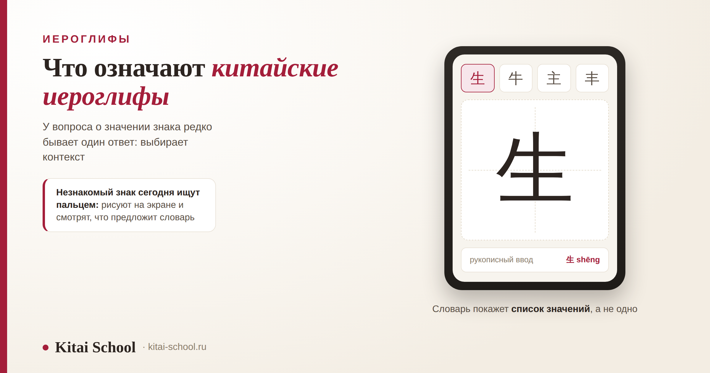
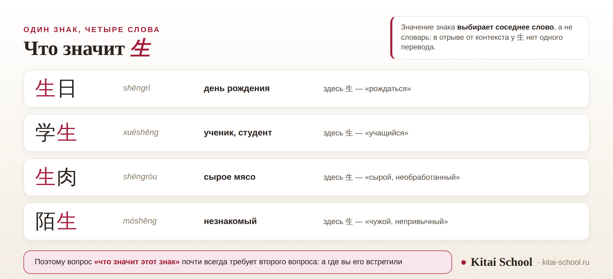

Иероглифы
Что означают китайские иероглифы: как узнать значение знака и почему у одного иероглифа их несколько


Спрашивают обычно так: вот знак — что он означает? Вопрос законный, но короткого ответа у него чаще всего нет, и дело не в вредности языка. У частотного иероглифа значений несколько, и выбирает между ними соседнее слово. Разберём по-рабочему: чем значение знака отличается от значения слова, как найти незнакомый иероглиф, почему переводчик на одиночном знаке подводит и что делать, если знак нужно не просто понять, а нанести на вещь.
Иероглиф несёт значение и слог, но значение почти никогда не одно. Знак и слово — разные уровни: 东西 это «вещь», а не «восток и запад». Значение выбирает контекст: 生 в четырёх словах значит четыре разных вещи. Искать знак удобнее всего рукописным вводом. Переводчик на одном знаке ошибается — нужен словарь со списком значений. В японском те же знаки значат другое.
Короткий ответ: что означают китайские иероглифы
Иероглиф — это минимальная единица письма, у которой есть и звучание, и значение. В этом его отличие от буквы: буква передаёт звук и сама по себе не значит ничего. Как устроена китайская письменность в целом и почему в ней нет алфавита, разобрано отдельно: в Китае буквы или иероглифы, а про буквы, которых ждут и не находят, — здесь: какие буквы в китайском языке.
Дальше начинается то, из-за чего вопрос и буксует. Значение иероглифа почти никогда не бывает единственным. У редких знаков оно одно, у частотных — несколько, и в разных словах работают разные.
Поэтому честный ответ на вопрос «что означает этот знак» обычно выглядит как список, и к нему сразу идёт встречный вопрос: а где вы его встретили? В надписи на вывеске, в сообщении, на подарке — от этого зависит, какое из значений нужное.
Есть и обратный случай, который удивляет не меньше. Часть знаков в современном языке самостоятельно почти не употребляется: они живут только внутри слов, как русские приставки и корни вне слова. Спрашивать, что такой знак значит сам по себе, примерно так же осмысленно, как спрашивать, что значит «пере-».
Знак или слово: что именно вы спрашиваете
Это различие снимает половину недоразумений. В китайском есть два уровня: 字 (zì) — письменный знак, и 词 (cí) — слово. Большинство современных слов состоят из двух знаков, и значение слова не складывается из значений частей.
| Слово | Пиньинь | Значение | Что с разбором по частям |
|---|---|---|---|
| 东西 | dōngxi | вещь, предмет | а не «восток и запад», хотя знаки именно эти |
| 马虎 | mǎhu | небрежный, кое-как | «лошадь» и «тигр» к значению отношения не имеют |
| 点心 | diǎnxin | лёгкая закуска | дословно «тронуть сердце» — красиво, но это идиома |
| 消息 | xiāoxi | новость, известие | сумма знаков значение не объясняет |
Отсюда правило, которое экономит много сил: если знак стоит в слове, ищите значение слова, а не знака. Разбирать 东西 по частям бесполезно — получится красивая, но неверная история про восток и запад.
Обратное тоже верно. Если знак стоит один — на печати, на подвеске, в заголовке, — тогда вопрос именно о знаке, и ответ придётся выбирать из списка значений.
Как отличить одно от другого без знания языка: посмотрите, стоит ли рядом второй знак вплотную, без пробела и без знаков препинания. В китайском письме пробелов между словами нет, поэтому граница слова на глаз не видна — и это ещё одна причина, по которой перевод по одному знаку даёт сбой.
Один знак — несколько значений
Посмотрим, как это выглядит на практике. Возьмём знак 生 (shēng) — он входит в сотни слов, и значение в них каждый раз своё.

То же самое происходит с другими частотными знаками. Вот четыре, которые встречаются в первый же месяц занятий.
| Знак | Чтение | Слова | Что с значением |
|---|---|---|---|
| 打 | dǎ | 打电话 звонить · 打车 поймать такси · 打球 играть в мяч · 打工 подрабатывать | словарное значение «бить», но в живых словах оно почти не видно |
| 上 | shàng | 上课 идти на урок · 上班 идти на работу · 上面 сверху · 上车 сесть в транспорт | и «верх», и «подниматься», и «начинать» |
| 过 | guò | 过来 подойти · 过去 пройти мимо · 吃过 доводилось есть | в третьем примере это уже не слово, а показатель прошлого опыта |
| 开 | kāi | 开门 открыть дверь · 开车 вести машину · 开会 проводить собрание · 开水 кипяток | одно из самых многозначных слов в языке |
Сколько всего значений у такого знака, сказать нельзя: словари считают по-разному. Один разводит оттенки на отдельные пункты, другой объединяет их в один. Цифры вроде «у 打 двадцать пять значений» гуляют по интернету, но проверить их невозможно, и я их приводить не буду.
Практический вывод простой. Когда вы учите знак, полезнее запомнить не список переводов, а три-четыре слова, в которых он живёт. Значение подтянется само — и подтянется правильное. Подробнее про такой способ: как запоминать иероглифы.
Как узнать значение незнакомого знака
Теперь к делу. Допустим, знак перед вами, а чтения вы не знаете. Прежде чем перечислять способы, расскажу случай, с которого обычно и начинается этот разговор.
Ученик принёс фотографию подвески с одним знаком и попросил перевести. Знак был 忍.
Словарь даёт короткое: «терпеть, выносить, сдерживаться». Ученик ждал другого — чего-то вроде силы духа или стойкости воина, потому что именно так этот знак подают в фильмах и в описаниях сувениров.
Разобрали вместе. Значение у знака именно словарное, а героический ореол вокруг него появился уже у нас, в пересказах. Для носителя 忍 — это прежде всего про сдержанность и про то, чтобы перетерпеть неприятное.
Подвеску он оставил, но теперь знает, что на ней написано, и может это объяснить. По-моему, это лучший исход.
Узнать значение знака — половина дела. Вторая половина — выяснить, что этот знак значит для того, кто читает его каждый день.
Эта история про знак на вещи, но правило из неё шире. Значение из словаря и ощущение носителя — не одно и то же, и второе словарь не показывает. Если надпись важна, последний шаг всегда один: спросить человека, для которого это родной язык.
А теперь способы найти знак, с которых всё и начинается.
| Способ | Что делаете | Где подводит |
|---|---|---|
| Рукописный ввод | рисуете знак пальцем в словаре или в клавиатуре телефона | работает даже при неверном порядке черт, но путается на сложных знаках |
| По ключу и числу черт | находите ключ, считаете остальные черты, ищете в таблице | надёжно, но требует навыка: нужно уметь выделять ключ |
| По фотографии | наводите камеру переводчика на вывеску или упаковку | удобно для текста целиком; на одиночном знаке ошибается чаще |
| По чтению | если знаете, как знак звучит, вводите пиньинь | самый быстрый способ, но чтение нужно знать заранее |
| Спросить носителя | показать фотографию и спросить, что это | даёт не только значение, но и ощущение: уместно ли это на вещи |
Поиск по ключу стоит освоить отдельно: он помогает не только найти знак, но и предположить значение до всякого словаря. Как это устроено, разобрано здесь: значение ключей в китайских иероглифах.
Про рукописный ввод добавлю одно наблюдение. Он прощает неверный порядок черт — и это ловушка: человек привыкает рисовать знак как попало, а потом не может его написать. Для поиска это нормальный инструмент, для учёбы — нет.
Почему переводчик ошибается на одном знаке
Жалоба частая: ввёл иероглиф в переводчик, получил странное слово. Объяснение простое — и его стоит знать, чтобы не винить программу зря.
Переводчик переводит текст, а не знак. Он рассчитан на фразу, в которой слова подсказывают друг друга. Получив одиночный иероглиф без окружения, он вынужден выбрать одно значение из нескольких — и берёт обычно самое частотное. Оно запросто окажется не тем, которое вам нужно.
Второй источник ошибок — знаки, которые почти не живут по отдельности. Многие иероглифы в современном языке встречаются только внутри слов, и перевод такого знака в одиночку — это перевод того, чего в речи не бывает.
Что делать вместо: пользоваться словарём, а не переводчиком. Словарь покажет весь список значений, примеры слов и то, как знак ведёт себя в сочетаниях. Разница как между «перевести» и «разобраться».
Ещё одна частая картина — перевод надписи целиком, когда в ней нет пробелов. Программа сама решает, где граница слов, и при неудачном разбиении получается бессмыслица. Если результат странный, попробуйте ввести текст по частям: иногда достаточно разделить фразу на два куска, чтобы перевод встал на место.
Тот же знак в японском значит другое
Ещё одна ловушка, в которую легко попасть, если искать значение знака в интернете без уточнения языка. Иероглифы заимствовались в Японию, Корею и Вьетнам, и за века значения разошлись.
| Знаки | В китайском | В японском | Комментарий |
|---|---|---|---|
| 手紙 | кит. 手纸 — туалетная бумага | яп. письмо | расхождение полное, и попасть впросак легко |
| 汽車 | кит. 汽车 — автомобиль | яп. поезд | знаки те же, транспорт разный |
| 娘 | кит. мать, матушка | яп. дочь | значение разошлось исторически |
| 丈夫 | кит. муж | яп. крепкий, надёжный | совпадение написания без совпадения смысла |
Оговорюсь сразу: японские значения приведены именно как японские. Это не «второе значение китайского знака» и не ошибка словаря, а другой язык, который пользуется тем же письмом.
Практический вывод: если вы нашли значение знака на сайте, посмотрите, про какой язык он. Разница между китайским и японским прочтением одной и той же надписи может быть полной.
Заметить японский текст можно по внешнему признаку: рядом с иероглифами там обычно стоят знаки слоговых азбук — округлые ひらがな или угловатые カタカナ. Если в надписи только иероглифы, это ещё не доказательство, что перед вами китайский, но присутствие азбуки — верный признак японского.
Чего знак не означает
Запрос «китайские символы значение» чаще всего приводит на картинки, где знаку приписан красивый смысл: сила, мудрость, удача, путь воина. Скажу прямо и без запугивания.
- У знака есть словарное значение, и оно обычно скромнее. 忍 — это «терпеть», а не «сила духа»; 道 — «путь, дорога, учение», и мистика в нём появляется только в определённых текстах.
- Знак не действует. Он ничего не притягивает и ни от чего не защищает: это единица письма, а не амулет. Отношение к знакам-пожеланиям вроде 福 — отдельная культурная история, и она про обычай, а не про свойства знака.
- Картинка из сети может содержать ошибку. Лишняя или пропущенная черта — и это уже другой знак либо не знак вовсе.
- Начертание тоже значит. Знак из текстового редактора, каллиграфический и рукописный выглядят по-разному, и носителю это заметно.
Порядок проверки, если надпись идёт на вещь, такой: найти знак в словаре, посмотреть, в каких словах он встречается, и показать носителю. Два независимых ответа лучше одного.
И последнее, что стоит сказать про запрос «китайские символы». Слова «символ» в значении «иероглиф» в самом китайском нет: знак называется 字 (zì), и ничего таинственного в этом названии не слышится. Ореол загадочности вокруг знаков — наш, внешний, и к устройству письма он отношения не имеет.
Знаки перестают быть загадкой, когда видишь их устройство: части, ключ, место в слове. Этому мы и учим — курс иероглифики. Оставить заявку или написать в Telegram.
Частые вопросы (FAQ)
Что означают китайские иероглифы?
Каждый иероглиф передаёт значение и слог: это не буква, а минимальная единица письма со смыслом. Но значение иероглифа почти никогда не единственное: у частотных знаков их по нескольку, и выбирает между ними контекст. Поэтому на вопрос «что значит этот знак» честный ответ обычно начинается со списка, а не с одного слова.
Почему у одного иероглифа несколько значений?
По той же причине, что и у русских слов: язык развивался, значения расходились и переносились. 生 — это и «рождаться», и «сырой», и «учащийся», и «незнакомый»; 开 — и «открывать», и «вести машину», и «проводить собрание». Сколько именно значений у знака, сказать точно нельзя: словари считают по-разному.
Как узнать, что означает незнакомый иероглиф?
Проще всего нарисовать его пальцем: рукописный ввод есть и в словарях, и в клавиатуре телефона. Другие способы — искать по ключу и числу черт, навести камеру переводчика или ввести чтение, если оно известно. Самый полный ответ даёт носитель: он скажет не только значение, но и то, как знак воспринимается.
Почему переводчик переводит один иероглиф неправильно?
Потому что он переводит текст, а не знак. Получив одиночный иероглиф без окружения, программа выдаёт одно из значений — обычно частотное, — и оно запросто окажется не тем. Надёжнее словарь, который показывает весь список значений и примеры слов со знаком.
Значит ли иероглиф то же самое в японском?
Не всегда. 手紙 в японском значит «письмо», а те же знаки в китайском — «туалетная бумага». 汽車 по-японски «поезд», по-китайски 汽车 — «автомобиль». 娘 в китайском «мать», в японском «дочь». Знаки общие, а значения разошлись, и переносить одно на другое нельзя.
Можно ли доверять значениям китайских символов из интернета?
С осторожностью. Картинки вроде «иероглиф силы» или «символ удачи» часто дают не словарное значение, а красивый пересказ, а иногда и вовсе неверный знак. Проверяйте по словарю, смотрите, в каких словах знак встречается, и, если надпись пойдёт на вещь, спросите носителя.
Можно ли выучить язык, зная значения иероглифов?
Нет, и это важное ограничение. Значения знаков — только часть дела: нужны слова, порядок слов и произношение. Человек, выучивший тысячу знаков по отдельности, читает примерно так же, как тот, кто знает буквы, но не знает слов. Знаки учат вместе со словами, в которых они живут.
Спрашивайте не только «что значит», но и «где встретили»! 看语境！
Источники
- Значения знаков 生, 打, 上, 过, 开 и слов 东西, 马虎, 点心, 消息 приведены по словарным данным; примеры слов отобраны из частотных.
- Различие 字 и 词 — общее место описаний китайского языка: знак и слово относятся к разным уровням, большинство современных слов двусложные.
- Количество значений у многозначных знаков намеренно не названо: словари членят значения по-разному, и единой цифры не существует.
- Японские значения: 手紙 «письмо», 汽車 «поезд», 娘 «дочь», 丈夫 «крепкий, надёжный» — приведены как значения японского языка, а не как варианты китайских. Расхождение сложилось исторически после заимствования письма.
- Способы поиска знака описаны без названий приложений: сервисы меняются, а приёмы остаются. Замечание о том, что переводчик на одиночном знаке выдаёт частотное значение, — наблюдение из практики, а не измерение.
- Чего в статье нет намеренно: пересказа того, как знак передаёт смысл без звука, и теории ключей — обе темы разобраны у нас отдельно и даны ссылками; эзотерических толкований знаков; советов по выбору татуировки.
- Практика Kitai School: вопросы учеников о знаках с вывесок, подарков и украшений, в том числе разбор 忍.